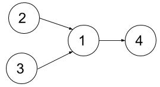
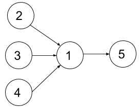

1494. 并行课程 II
状压 DP：dp[已学集合] = 最少学期数；每学期从「先修全满足」的可学课里，lowbit 枚举 ≤ k 门的子集转移。
思路
n ≤ 15才用状压：pre[i]把课程 i 的先修压成一个位集合，dp[mask]表示学完mask的最少学期。- 每个状态先算
avail：没学过、且先修全是mask子集的课——这就是本学期「可学集合」。 - 用
sub = (sub−1) & avail的 lowbit 技巧枚举avail的全部非空子集，bitCount(sub) ≤ k的才转移：dp[mask|sub] = min(dp[mask|sub], dp[mask]+1)。 - 答案是
dp[full]；题目保证 DAG 且可完成，不可达状态跳过即可。
图解
最优解
1import java.util.*;2 3class Solution {4 public int minNumberOfSemesters(int n, int[][] relations, int k) {5 int[] pre = new int[n]; // pre[i]：课程 i 需要的全部先修课（位集合）6 for (int[] r : relations) pre[r[1] - 1] |= 1 << (r[0] - 1);7 int full = (1 << n) - 1;8 int[] dp = new int[full + 1]; // dp[mask]：学完 mask 这些课的最少学期数9 Arrays.fill(dp, Integer.MAX_VALUE);10 dp[0] = 0;11 for (int mask = 0; mask < full; mask++) {12 if (dp[mask] == Integer.MAX_VALUE) continue;13 int avail = 0; // 先修全满足、还没学上的课14 for (int i = 0; i < n; i++) {15 if ((mask & (1 << i)) == 0 && (mask & pre[i]) == pre[i]) avail |= 1 << i;16 }17 // 本学期挑可学集合的一个非空子集（≤ k 门）：lowbit 法逐个枚举所有子集18 for (int sub = avail; sub > 0; sub = (sub - 1) & avail) {19 if (Integer.bitCount(sub) <= k) dp[mask | sub] = Math.min(dp[mask | sub], dp[mask] + 1);20 }21 }22 return dp[full];23 }24}题目
给你一个整数 n 表示某所大学里课程的数目，编号为 1 到 n ，数组 relations 中， relations[i] = [xi, yi] 表示一个先修课的关系，也就是课程 xi 必须在课程 yi 之前上。同时你还有一个整数 k 。
在一个学期中，你 最多 可以同时上 k 门课，前提是这些课的先修课在之前的学期里已经上过了。
请你返回上完所有课最少需要多少个学期。题目保证一定存在一种上完所有课的方式。
示例 1：

输入：n = 4, relations = [[2,1],[3,1],[1,4]], k = 2 输出：3 解释：上图展示了题目输入的图。在第一个学期中，我们可以上课程 2 和课程 3 。然后第二个学期上课程 1 ，第三个学期上课程 4 。
示例 2：

输入：n = 5, relations = [[2,1],[3,1],[4,1],[1,5]], k = 2 输出：4 解释：上图展示了题目输入的图。一个最优方案是：第一学期上课程 2 和 3，第二学期上课程 4 ，第三学期上课程 1 ，第四学期上课程 5 。
示例 3：
输入：n = 11, relations = [], k = 2 输出：6
提示：
1 <= n <= 151 <= k <= n0 <= relations.length <= n * (n-1) / 2relations[i].length == 21 <= xi, yi <= nxi != yi- 所有先修关系都是不同的，也就是说
relations[i] != relations[j]。 - 题目输入的图是个有向无环图。
题面取自力扣当前版本。
数据快照 2026-11-04。题面版权归力扣所有，本站点仅供本人学习使用，请勿对外发布。